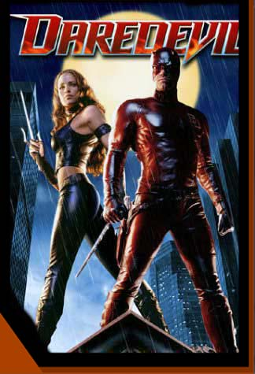

|
|
Information About

Real Name: Matthew
Michael Murdock Matt Murdock was the son of 'Battling Jack' Murdock, a boxer who made his living in New York's Hell's Kitchen. Raising Matt alone, due to the death of Matt's mother, the elder Murdock took it upon himself to provide a better life for his son. He began to work as an enforcer for the Fixer, a local mobster, to give Matt more than his boxing winnings. However, Jack Murdock taught his son not to fight and tried to guide him into studies. Matt became a bookworm, and repeatedly was mocked by students. They teased him by calling him 'Daredevil'. Matt didn't want to get his father mad at him, so he secretly trained himself, so he could stand up to the bullies at school. While walking down a street one day, Matt noticed a blind man was about to get hit by a truck. He ran in front of the truck, and pushed the blind man out of the way. However, the truck was carrying radioactive waste, and some spilled out directly onto Matt's eyes. Matt couldn't see anymore. Matt's remaining senses became heightened, and he was able to 'see' using a 'radar' sense, that showed outlines and shapes. His hearing became so acute that he could hear heartbeats. He could smell the faintest odor in a room. He could touch a newspaper to 'read' it. After the accident, a mysterious blind man named Stick offered to help the boy develop his new found powers, and train him in martial arts. During this time, Jack Murdock was enjoying some success in the boxing ring. However, he soon found out that all his matches were fixed, and he was to throw his next fight. Jack didn't want to lose his match in front of his son in the audience, so he went against his orders and won the match. He was murdered by the Fixer's men that night. Matt, using his new training and abilities, sought revenge against his father's killers. After a few years, Matt went to Columbia University and studied law with his friend Franklin 'Foggy' Nelson. It was here that both men received their degrees, and they started up their law firm 'Nelson and Murdock' in New York City afterwards. Karen Page was their secretary. Matt adopted the identity of Daredevil to begin his crusade against all the injustices he saw in the courtroom. The major villains he has had to contend with are the Kingpin, Bullseye, the Hand, Mr. Fear, Cobra, Mr. Hyde, Stilt-Man and others.
RETURN TO DAREDEVIL'S INTRODUCTION PAGE
|